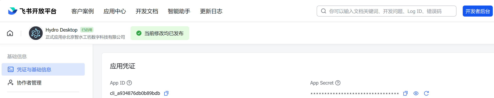
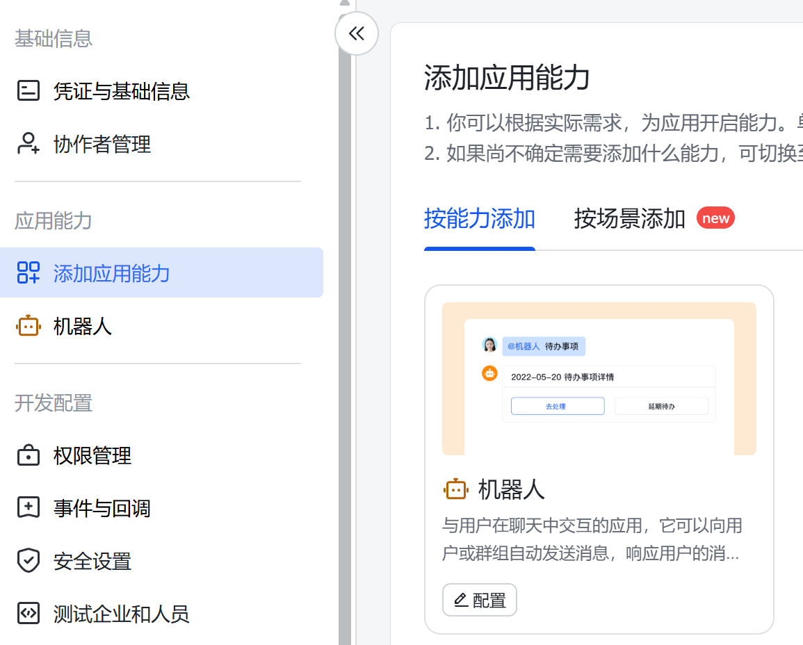
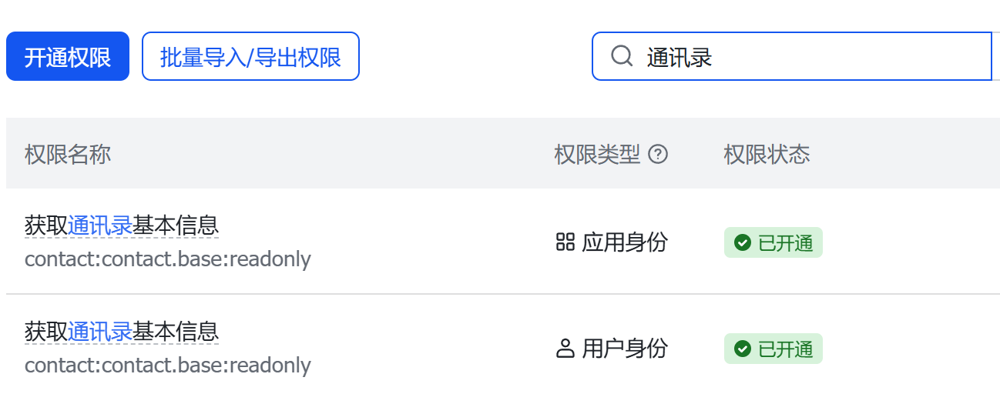
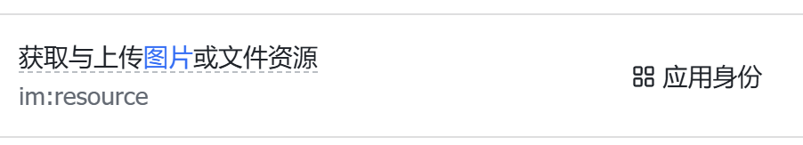
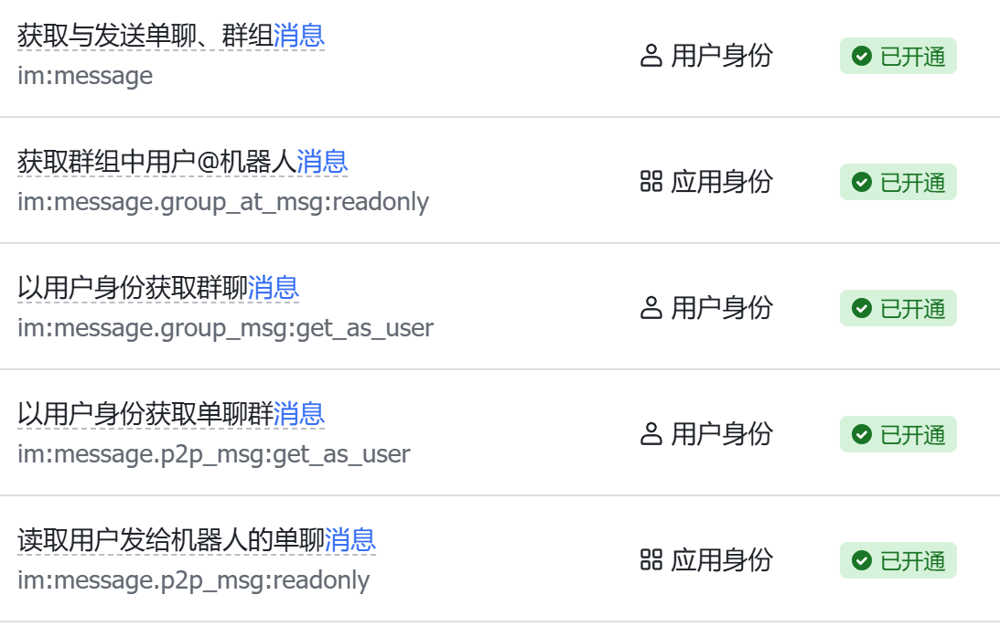
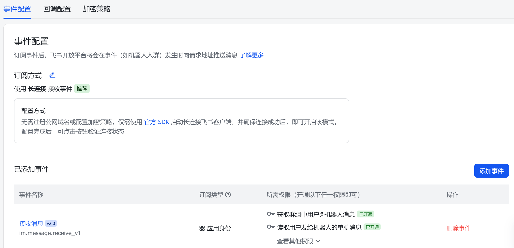

1
创建企业自建应用
登录飞书开放平台，进入开发者后台，创建一个 企业自建应用。申请入口：飞书开放平台
- 应用名建议起得直观一点，例如“Hydro Desktop 助手”
- 创建完成后，记录
App ID和App Secret

先把环境和账号条件准备齐，后面的步骤会顺很多。
先在飞书开放平台把应用准备好。
登录飞书开放平台，进入开发者后台，创建一个 企业自建应用。申请入口：飞书开放平台
App ID 和 App Secret
在应用后台找到“应用能力”，开启 机器人。

为了让聊天、图片和联系人功能正常工作，建议至少把这些方向的权限开好：
下面图片仅作示意图参考；如果你不确定具体要开哪些权限，也可以先全部开通。



进入应用后台的“事件订阅”，选择 长连接接收事件。
im.message.receive_v1
前面的能力、权限、事件订阅配好后，提交应用发布，等待生效。
飞书侧准备好以后，再回到软件里填写配置。
| 字段 | 怎么填 |
|---|---|
| 启用飞书桥接 | 打开 |
| App ID | 填写飞书开放平台里的 App ID |
| App Secret | 填写飞书开放平台里的 App Secret |
| 默认工作目录 | 可选，不填也可以 |
| 历史会话数量 | 可选，默认通常就够用 |
建议按这个顺序验证，最省时间。
用飞书测试账号给机器人发一条普通文本，确认 Hydro Desktop 能收到消息，并且机器人能正常回复。
在 Hydro Desktop 会话工具栏里点击飞书发送入口，选择联系人发一条消息；然后再从飞书回一条，确认它能回到原会话。
把机器人加入测试群，在群里发消息，确认桌面端能收到，并且群聊消息不会错落到某个单聊用户会话里。
配置失败时，先看这些最常见原因。
先检查应用是否已经发布生效，机器人能力是否已开启，事件订阅是否配置为长连接，以及消息接收事件是否已订阅。
通常是通讯录 / 部门成员读取权限不够，或者权限改完后还没有重新发布应用。
先看 Hydro Desktop 里飞书桥接状态是不是“已连接”，再确认这台电脑上的 Agent / 模型功能本来就是可用的。
多台桌面端同时连接同一个飞书应用时，最容易出现重复回复、抢消息或回复错乱。